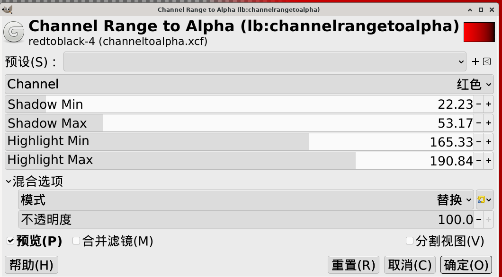

本文件是该滤镜的原始说明文档（构建命令按旧目录结构书写，已过时）。 统一构建方式请见工程根目录
README.md与build.sh。
GEGL_GIMP_PLUGIN_channelrangetoalpha

English version（同一份说明的英文版）
1. Compile & Install Commands
Native Linux (System installed GIMP)
sh build_linux.sh
cp build/gegl-*.so ~/.local/share/gegl-0.4/plug-insFlatpak Linux (Flatpak GIMP)
sh build_linux.sh
cp build/gegl-*.so ~/.var/app/org.gimp.GIMP/data/gegl-0.4/plug-ins/2. How to Open the Plugin (2 Methods)
After installation, restart GIMP to activate the plugin.
Method 1: Menu Bar (Recommended)
Menu path: Colors → SuperMrWang → Mask → Range → Alpha
Method 2: GEGL Operation
- Go to
Filters → Generic → GEGL Operations - In the search box, enter:
lb:channel-range-to-alpha - Select it and click
OKto apply
中文
1. 编译与安装命令
Linux 原生版（系统包安装的GIMP）
sh build_linux.sh
cp build/gegl-*.so ~/.local/share/gegl-0.4/plug-insLinux Flatpak 容器版（应用商店Flatpak GIMP）
sh build_linux.sh
cp build/gegl-*.so ~/.var/app/org.gimp.GIMP/data/gegl-0.4/plug-ins/2. 插件打开方式（两种方法）
安装完成后重启 GIMP，插件即可使用。
方法一：菜单打开（推荐）
菜单路径：颜色 → SuperMrWang → Mask → Range → Alpha
方法二：GEGL 操作打开
- 顶部菜单点击：
滤镜 → 通用 → GEGL 操作 - 在弹出窗口的搜索框输入：
lb:channel-range-to-alpha - 选中后点击「确定」即可使用插件
只要这一个
Windows 模块 channel-range-to-alpha.dll，放进 %LOCALAPPDATA%\gegl-0.4\plug-ins 后重启 GIMP。
整包在 下载页。